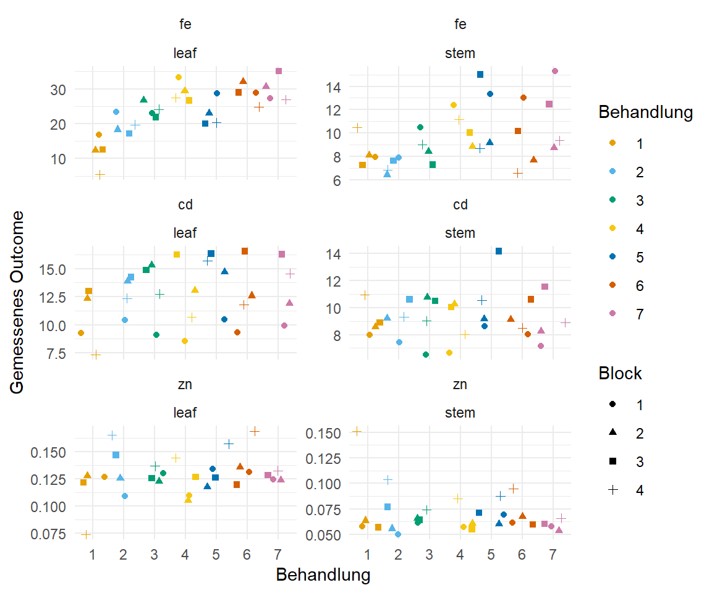
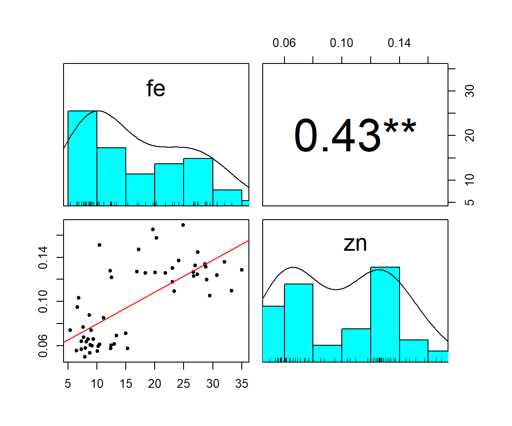
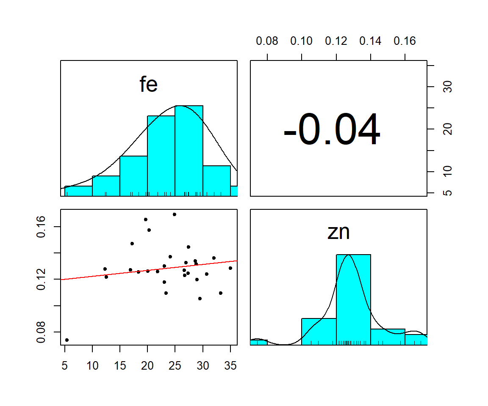

pacman::p_load(tidyverse, magrittr, readxl, see, janitor,
effectsize, emmeans, multcomp, psych,
parameters, scales,
#psych, parameters, effectsize, emmeans,
#multcomp,
conflicted)
## resolve some conflicts with same function naming
conflict_prefer("select", "dplyr")
conflict_prefer("filter", "dplyr")10 Spurenelemente in Spinatblättern und Stielen
Version vom Mai 10, 2023 um 14:11:32
Wir wollen folgende R Pakete in diesem Kapitel nutzen.
In der folgenden Datenanalyse schauen wir uns die Konzentrationen von den Spurenelementen Fe, Cd und Zn in Spinat an. Dabei haben wir zum einen in den Blätter und zum anderen in den Stielen gemessen. Daher haben wir insgesamt drei Outcomes an zwei Orten und somit sechs Kombinationen auszuwerten. Wir haben uns darüber hinaus noch sieben Behandlungen in je vier Blöcken als Wiederholung angeschaut. Laden wir also einmal die Daten.
spinach_tbl <- read_excel("data/spinach_metal_data.xlsx") %>%
mutate(trt = as_factor(trt),
sample = as_factor(sample),
block = as_factor(block))Wir haben die Daten im Wide-Format vorliegen, daher müssen wir die Daten über die Funktion pivot_longer() noch in das Long-Format umwandeln. Zum einen brauchen wir das Long-Format für unsere Abbildungen und zum anderen dann auch für unsere Analysen.
spinach_plot_tbl <- spinach_tbl %>%
pivot_longer(cols = fe:zn,
names_to = "outcome",
values_to = "rsp") %>%
mutate(outcome = as_factor(outcome))
spinach_plot_tbl %>%
head# A tibble: 6 x 5
trt sample block outcome rsp
<fct> <fct> <fct> <fct> <dbl>
1 1 leaf 1 fe 16.9
2 1 leaf 1 cd 9.28
3 1 leaf 1 zn 0.127
4 1 stem 1 fe 7.95
5 1 stem 1 cd 7.97
6 1 stem 1 zn 0.0579Wir sehen, dass wir für jede Outcome/Sample Kombination ein zweifaktorielles Modell für Behandlung und Block rechnen müssen. Schauen wir uns zuerst wie immer einmal die Abbildung 10.1 in ggplot() an und machen dann mit der Auswertung weiter.
ggplot(spinach_plot_tbl, aes(trt, rsp, shape = block, color = trt)) +
theme_minimal() +
geom_jitter() +
facet_wrap(~ outcome*sample, scales = "free_y", ncol = 2) +
labs(x = "Behandlung", y = "Gemessenes Outcome",
shape = "Block", color = "Behandlung") +
scale_color_okabeito()
Da wir nur eine Beobachtung je Block/Behandlung Kombination haben, können wir später keine Interaktion rechnen. Wir bräiuchten dafür Wiederholungen auf der Ebene der Blöcke. Also nicht nur eine Pflanze pro Block und Behandlung. Im Folgenden gibt es einmal die umständliche Copy&Paste Variante und einmal die etwas komplexere Lösung über map() und nest().
10.0.1 Eisen (Fe) und Blatt
Machen wir es uns erstmal einfach. Wir müssen ja für jede der sechs Outcome/Sample Kombinationen eine ANOVA rechnen, dann rechnen wir einen multiplen Vergleich und lassen uns das Compact letter display wiedergeben. Das machen wir jetzt alles einmal für die Kombination Eisen und Blatt.
Also brauchen wir als erstes unseren Datensatz mit nur dem Outcome gleich fe und das Sample gleich leaf. Das Selektieren machen wir dann über die Funktion filter().
fe_leaf_tbl <- spinach_plot_tbl %>%
filter(outcome == "fe" & sample == "leaf")Dan müssen wir das lineare Modell schätzen. Das Schätzen der Koeffizienten übernimmt wie immer die Funktion lm(). Wir nehmen hier an, dass unsere Konzentrationen ungefähr normalverteilt sind. Wir können den Interaktionsterm trt:block nicht mit ins Modell nehmen, da wir nur eine Beobachtung je Behandlung/Block Kombination haben.
fe_leaf_fit <- lm(rsp ~ trt + block, data = fe_leaf_tbl)Jetzt können wir die ANOVA rechnen und schauen was wir da haben.
fe_leaf_fit %>% anova()Analysis of Variance Table
Response: rsp
Df Sum Sq Mean Sq F value Pr(>F)
trt 6 1015.45 169.242 19.0531 6.759e-07 ***
block 3 84.35 28.117 3.1654 0.04975 *
Residuals 18 159.89 8.883
---
Signif. codes: 0 '***' 0.001 '**' 0.01 '*' 0.05 '.' 0.1 ' ' 1Wir haben einen ganz schwachen signifikanten Effekt des Blocks und einen starken signifikanten Effekt der Behandlung. Der Effekt des Blocks ist nicht so schön, wir würden eigentlich erwarten, dass der Block keinen Effekt hat. Wir haben ja die Zuordnung der Behandlungen zu den Blöcken zufällig durchgeführt. Da sollte also eigentlich kein Effekt des Blocks auftreten. Schauen wir nochmal wie stark die Effekte sind in dem wir uns das \(\eta^2\) berechnen.
fe_leaf_fit %>% eta_squared()# Effect Size for ANOVA (Type I)
Parameter | Eta2 (partial) | 95% CI
-----------------------------------------
trt | 0.86 | [0.73, 1.00]
block | 0.35 | [0.00, 1.00]
- One-sided CIs: upper bound fixed at [1.00].Der Effekt der behandlung it auf jeden Fall größer als der Effelt des Blocks. Gut 86% der Vrainz wird durch die Behandlung erklärt, dass passt dann soweit.
Wir rechnen jetzt mit der Funktion emmeans() weiter und berücksichtigen dabei die unterschiedlichen Mittelwerte der Blöcke für die einzelnen Behandlungen.
fe_leaf_emm <- fe_leaf_fit %>%
emmeans(~ trt)Jetzt können wir un die paarweisen Vergleich über die Funktion contrast() wiedergeben lassen. Wir sehen, dass wir einiges an signifikanten Ergebnissen vorliegen haben. Du kannst die Ausgabe in ein Tibble mit as_tibble() umwandeln und dir dann mit der Funktion print(n = 21) alle Zeilen ausgeben lassen.
fe_leaf_emm %>%
contrast(method = "pairwise", adjust = "bonferroni") contrast estimate SE df t.ratio p.value
trt1 - trt2 -7.844 2.11 18 -3.722 0.0328
trt1 - trt3 -12.156 2.11 18 -5.768 0.0004
trt1 - trt4 -17.429 2.11 18 -8.270 <.0001
trt1 - trt5 -11.218 2.11 18 -5.323 0.0010
trt1 - trt6 -16.877 2.11 18 -8.008 <.0001
trt1 - trt7 -18.222 2.11 18 -8.646 <.0001
trt2 - trt3 -4.312 2.11 18 -2.046 1.0000
trt2 - trt4 -9.585 2.11 18 -4.548 0.0052
trt2 - trt5 -3.374 2.11 18 -1.601 1.0000
trt2 - trt6 -9.033 2.11 18 -4.286 0.0093
trt2 - trt7 -10.378 2.11 18 -4.924 0.0023
trt3 - trt4 -5.273 2.11 18 -2.502 0.4664
trt3 - trt5 0.938 2.11 18 0.445 1.0000
trt3 - trt6 -4.721 2.11 18 -2.240 0.7970
trt3 - trt7 -6.066 2.11 18 -2.878 0.2101
trt4 - trt5 6.211 2.11 18 2.947 0.1809
trt4 - trt6 0.552 2.11 18 0.262 1.0000
trt4 - trt7 -0.793 2.11 18 -0.376 1.0000
trt5 - trt6 -5.659 2.11 18 -2.685 0.3175
trt5 - trt7 -7.004 2.11 18 -3.323 0.0794
trt6 - trt7 -1.345 2.11 18 -0.638 1.0000
Results are averaged over the levels of: block
P value adjustment: bonferroni method for 21 tests Schauen wir uns für diesen Vergleich dann noch das Compact letter display an. Bitte beachte, dass du dir mit der Funktion arrange() immer die Reihenfolge der Behandlungen ausgeben lassen kannst. Sonst ist die Ausgabe nach der Spalte .group sortiert und nicht nach den Behandlungen. Wenn die Buchstaben nicht gleich sind, dann unterscheiden sich die Behandlungen.
fe_leaf_emm %>%
cld(Letters = letters, adjust = "none") %>%
arrange(trt) trt emmean SE df lower.CL upper.CL .group
1 11.8 1.49 18 8.66 14.9 a
2 19.6 1.49 18 16.50 22.8 b
3 23.9 1.49 18 20.81 27.1 b
4 29.2 1.49 18 26.09 32.3 c
5 23.0 1.49 18 19.88 26.1 b
6 28.7 1.49 18 25.53 31.8 c
7 30.0 1.49 18 26.88 33.1 c
Results are averaged over the levels of: block
Confidence level used: 0.95
significance level used: alpha = 0.05
NOTE: If two or more means share the same grouping symbol,
then we cannot show them to be different.
But we also did not show them to be the same. Auch hier schauen wir uns einmal die Korrelation zwischen den Outcomes in der Abbildung 10.2 an. Wir sehen in der Abbildung 10.2 (a) die Korrelation zwischen den beiden Outcomes Fe und Zn zusammen in den Blättern und den Stielen. Wir würden meinen, dass wir eine positive Korrelation vorliegen haben. Wir sehen, dass mit mehr Zn auch mehr Fe auftritt. Was uns aber etwas stutzig werden lässt, sind die beiden Punktewolken in der linken unteren Abbildung. Daher einmal schnell aufgetrennt für die Blätter in Abbildung 10.2 (b) und für die Stiele in Abbildung 10.2 (c). Wir sehen, dass wir nichts sehen. Denn getrennt für die Blätter und Stiele haben wir dann keine Korrelation mehr für die beiden Outcomes vorliegen.
spinach_tbl %>%
select(fe, zn) %>%
pairs.panels(smooth = TRUE, density = TRUE, method = "kendall", lm = TRUE,
cor = TRUE, ellipses = FALSE, stars = TRUE)
spinach_tbl %>%
filter(sample == "leaf") %>%
select(fe, zn) %>%
pairs.panels(smooth = TRUE, density = TRUE, method = "kendall", lm = TRUE,
cor = TRUE, ellipses = FALSE, stars = TRUE)
spinach_tbl %>%
filter(sample == "stem") %>%
select(fe, zn) %>%
pairs.panels(smooth = TRUE, density = TRUE, method = "kendall", lm = TRUE,
cor = TRUE, ellipses = FALSE, stars = TRUE) 


10.0.2 Und alles aufeinmal…
Nun gut, jetzt haben wir unsere Analyse für das Blatt und den Eisengehalt gerechnet. Wir müssten jetzt die Analyse nochmal für alle anderen fünf Kombinationen durchführen. Das würde einiges an Zeit kosten und auch sehr viel Copy&Paste Aufwand. Kann man machen, aber wir können die Analyse auch in einem Rutsch durchführen. Dafür nutzen wir die Funktion nest() und dann anschließend die Funktion map() um auf den genesteten Daten die Analysen zu rechnen.
Im ersten Schritt müssen wir unsere Daten gruppieren. Wir haben dann die sechs Kombinationen aus Outcome und Sample vorliegen. Dann nesten wir den Datensatz in sechs Zeilen. Wir klappen sozusagen die Daten für jede der sechs Kombinationen zusammen. Alles fällt dann in eine Zelle zusammen.
spinach_nest_tbl <- spinach_plot_tbl %>%
group_by(sample, outcome) %>%
nest() Schauen wir uns den genesteten Datensatz einmal an. Wir sehen, dass wir die gesamten Daten in der Spalte data zusammengefaltet haben. Wir haben also sechs Tibbles mit den Daten der jeweiligen Outcome/Sample Kombinationen in der Spalte data vorliegen.
spinach_nest_tbl # A tibble: 6 x 3
# Groups: sample, outcome [6]
sample outcome data
<fct> <fct> <list>
1 leaf fe <tibble [28 x 3]>
2 leaf cd <tibble [28 x 3]>
3 leaf zn <tibble [28 x 3]>
4 stem fe <tibble [28 x 3]>
5 stem cd <tibble [28 x 3]>
6 stem zn <tibble [28 x 3]>Wir können jetzt auf den Tibbles in der Spalte data weiter rechnen. Wir nutzen für das Weiterrechnen die Funktion map(), die in jeder Zeile der Spalte .data die gleiche Funktion ausführt. Unser Ergebnis speichern wir dann in einer neuen Spalte und dafür nutzen wir die Funktion mutate().
Konkret erstellen wir uns jetzt eine neue Spalte model in der das lineare Modell der Funktion lm() abliegt.
spinach_model_tbl <- spinach_nest_tbl %>%
mutate(model = map(data, ~lm(rsp ~ trt + block, data = .x))) Im weiteren Schritt rechnen wir jetzt auf der Spalte model eine ANOVA und lassen uns dann die schönere Ausgabe über die Funktion model_parameters() wiedergeben. Der wichtigste Tiel ist die Funktion unnest() die uns die Zellen mit den ANOVA Ergebnissen dann wieder ausklappt. Der Rest ist dann noch filtern und anpassen. Ich möchte das die Ausgabe reduziert ist und die p-Werte sollen auch schön formatiert werden.
spinach_model_tbl %>%
mutate(anova = map(model, anova)) %>%
mutate(parameter = map(anova, model_parameters)) %>%
select(sample, outcome, parameter) %>%
unnest(parameter) %>%
filter(Parameter != "Residuals") %>%
select(sample, outcome, Parameter, p) %>%
mutate(p = pvalue(p))# A tibble: 12 x 4
# Groups: sample, outcome [6]
sample outcome Parameter p
<fct> <fct> <chr> <chr>
1 leaf fe trt <0.001
2 leaf fe block 0.050
3 leaf cd trt 0.047
4 leaf cd block <0.001
5 leaf zn trt 0.424
6 leaf zn block 0.290
7 stem fe trt 0.021
8 stem fe block 0.016
9 stem cd trt 0.325
10 stem cd block <0.001
11 stem zn trt 0.512
12 stem zn block <0.001Auch können wir un die \(\eta^2\) für die Modelle berechnen lassen. Die Funktion unnest() klappt uns dann die Ergebnisse wieder aus. Dann müssen wir noch etwas aufräumen und schon haben wir für alle Kombinationen dann den Anteil der erklärten Varianz.
spinach_model_tbl %>%
mutate(eta = map(model, eta_squared)) %>%
unnest(eta) %>%
clean_names() %>%
select(sample, outcome, eta2_partial) # A tibble: 12 x 3
# Groups: sample, outcome [6]
sample outcome eta2_partial
<fct> <fct> <dbl>
1 leaf fe 0.864
2 leaf fe 0.345
3 leaf cd 0.475
4 leaf cd 0.775
5 leaf zn 0.260
6 leaf zn 0.183
7 stem fe 0.529
8 stem fe 0.430
9 stem cd 0.295
10 stem cd 0.652
11 stem zn 0.232
12 stem zn 0.589Im letzten Schritt bauen wir uns die Spalten für die Funktion emmeans(), dann die Kontraste und das Compact letter display. Hier nutzen wir die Schreibweise map(<Spalte>, <Funktion>, <Optionen>). Daher definieren wir erst welche Spalte map() bearbeiten soll. Dann die Funktion die map() nutzen soll und anschließend die Optionen für die Funktion. Wir können hier auch mehrere Optionen nacheinander angeben.
spinach_emm_tbl <- spinach_model_tbl %>%
mutate(emm = map(model, emmeans, ~trt)) %>%
mutate(contrast = map(emm, contrast, method = "pairwise",
adjust = "none")) %>%
mutate(cld = map(emm, cld, Letters = letters, adjust = "none"))Jetzt lassen wir uns die Spalte contrast wiedergeben. Wir müssen aber vorher die Spalte noch in ein Tibble umwandeln. Dann wollen wir noch die p-Werte schöner haben. Wichtig ist auch immer, dass wir über die Funktion select() die für uns wichtigen Spalten auswählen.
spinach_emm_tbl %>%
mutate(contrast = map(contrast, as_tibble)) %>%
unnest(contrast) %>%
select(sample, outcome, contrast, p.value) %>%
mutate(p.value = pvalue(p.value))# A tibble: 126 x 4
# Groups: sample, outcome [6]
sample outcome contrast p.value
<fct> <fct> <chr> <chr>
1 leaf fe trt1 - trt2 0.002
2 leaf fe trt1 - trt3 <0.001
3 leaf fe trt1 - trt4 <0.001
4 leaf fe trt1 - trt5 <0.001
5 leaf fe trt1 - trt6 <0.001
6 leaf fe trt1 - trt7 <0.001
7 leaf fe trt2 - trt3 0.056
8 leaf fe trt2 - trt4 <0.001
9 leaf fe trt2 - trt5 0.127
10 leaf fe trt2 - trt6 <0.001
# i 116 more rowsNachdem wir uns die Kontraste für die paarweisen Vergleiche wiedergeben haben lassen, wollen wir jetzt noch die ganzen Compact letter displays haben. Auch hier nutzen wir dann die Funktion unnest() und wolle dann nicht alle Spalten haben.
spinach_emm_tbl %>%
mutate(cld = map(cld, arrange, trt)) %>%
unnest(cld) %>%
select(sample, outcome, trt, .group) %>%
print(n = 15)# A tibble: 42 x 4
# Groups: sample, outcome [6]
sample outcome trt .group
<fct> <fct> <fct> <chr>
1 leaf fe 1 " a "
2 leaf fe 2 " b "
3 leaf fe 3 " b "
4 leaf fe 4 " c"
5 leaf fe 5 " b "
6 leaf fe 6 " c"
7 leaf fe 7 " c"
8 leaf cd 1 " a "
9 leaf cd 2 " bc"
10 leaf cd 3 " bc"
11 leaf cd 4 " ab "
12 leaf cd 5 " c"
13 leaf cd 6 " abc"
14 leaf cd 7 " bc"
15 leaf zn 1 " a"
# i 27 more rowsMit der Option print(n = 15) kannst du dir die ersten fünfzehn Zeilen ausgeben lassen. du musst also schauen, wie viele Zeilen dein Tibble hat und dann kannst du dir das ganze Tibble über die Funktion print() ausgeben lassen. Ich nutze immer diese Art der Ausgabe mit print() da es sicherer ist, als sich immer den ganzen Datensatz wiedergeben zu lassen. Mit sicherer meine ich, dass ich mir nicht die ganze R Console mit der Ausgabe zubaue.